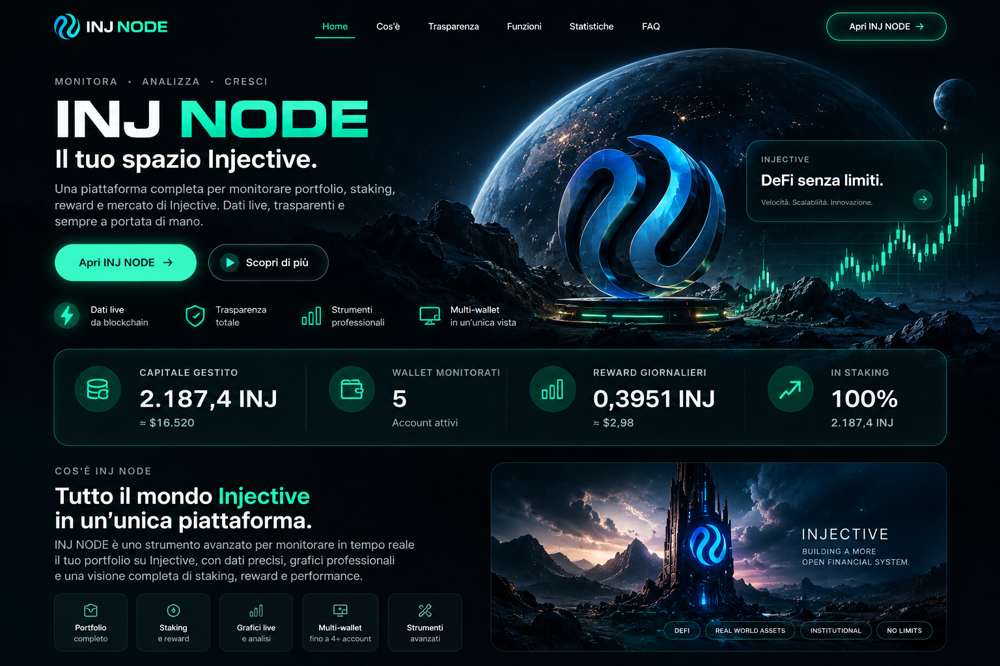

CAPITALE GESTITO LIVE
—INJ
—INJ / USDT —
La vetrina pubblica di INJ NODE: capitale aggregato dei 5 account monitorati, staking e reward letti live dalla rete Injective.

INJ NODE raccoglie le informazioni che contano e le trasforma in una vista immediata: patrimonio, delegazioni, reward, mercato e strumenti di analisi.
Capitale e performance in una vista pulita.
Delegazioni e reward letti direttamente dalla rete.
Prezzo, grafici e strumenti live dedicati a INJ.
Più account, un unico quadro aggregato.
Un'esperienza progettata intorno a INJ, senza rumore e senza esporre pubblicamente gli indirizzi gestiti.
Il totale pubblico viene calcolato live sui cinque account monitorati da INJ NODE.
Il sito comunica il totale gestito senza mostrare l'elenco degli indirizzi.
INJ NODE legge e organizza i dati: non custodisce fondi e non movimenta asset.